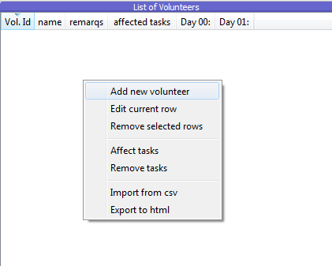
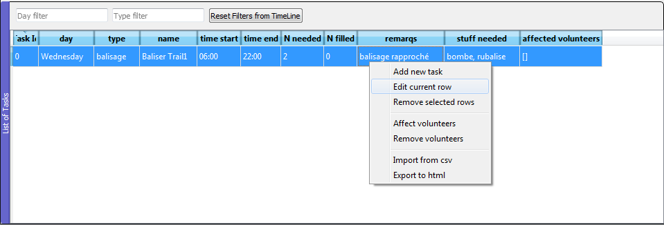

Édition¶
Edition manuelle¶
Pour remplir l’une ou l’autre des tables il suffit de positionner la souris dessus et de faire un clic droit. Un menu contextuel apparait alors, tel que visible sur la Fig. 5 et sur la Fig. 6.

Fig. 5 Edition (clic droit) de la table des volontaires

Fig. 6 Edition (clic droit) de la table des tâches